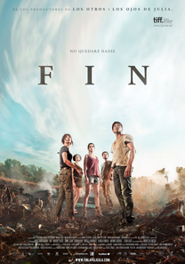

Fin
23 de junio. Un hombre dibuja compulsivamente frente a la playa de Alicante imágenes apocalípticas mientras la gente comienza a encender ya sus hogueras para celebrar la noche de San Juan.
Tras recoger sus cosas, el hombre sube al TRAM, dirigiéndose a un joven trajeado que sale de un vagón al que trata de saludar, aunque este pasa de largo, no volviendo a verlo cuando finalmente se gira tras parecer haberle reconocido.
El joven, Félix, pasa con su coche a recoger a una chica, Eva, con la que va a pasar el fin de semana en una reunión con los amigos de él, sobre los que le va preguntando para conocerlos y saber cómo son.
El grupo está formado por Sara, que fue quien organizó la reunión y a la que de joven llamaban Madre Teresa por su ingenuidad y buen corazón.
Maribel fue en el pasado novia de Félix, pero acabó casándose con Rafa, otro miembro del grupo.
Sergio es el artista del grupo y que es el dueño de la casa a la que van.
Hugo es el ligón del grupo, y Félix está seguro de que tratará de enrollarse con Eva pese a que sabe que irá con Cova (Covadonga), su mujer.
Y finalmente está Ángel al que llamaban el Profeta, por algo que Félix no desea contarle a Eva, ya que, afirma, no cree que vaya a la reunión.
Cuando llegan a la reunión todos parecen contentos de volver a reunirse, y, tal como esperaban Ángel no está, pese a que, según afirma Sara, la reunión fue idea suya.
Tras instalarse, Eva les pregunta a Maribel y a Sara por Ángel, pero tampoco ellas le cuentan nada.
Tras la cena Eva preparan una hoguera para hacer una celebración como si fuera la noche de San Juan, aunque en realidad es la de San Lorenzo, esperando ver la lluvia de estrellas.
Eva prepara unos mojitos para todos, y tal como Félix había pronosticado, Hugo le tira los tejos, siendo vistos por Cova, la novia de este, también ajena al grupo y a sus batallitas.
Recordando los viejos tiempos, deben escribir en un papel las cosas malas que desean dejar atrás, quemando el papel en la hoguera. Y recordando también aquellos tiempos Sergio, ya borracho, se vuelve a desnudar como hacía entonces brindando por la empresa en ruinas de Rafa.
Ante el cariz que va tomando la noche, Cova decide irse, descubriendo que está borracha, porque Sergio le echó algo a la bebida.
Comienzan a discutir y de pronto el cielo se ilumina como si fuera día, con un extraño brillo, observando que se fue la luz en la casa y que todos se quedaron sin batería en sus móviles, ocurriendo lo mismo con los coches.
Eva pregunta de nuevo por lo del Profeta, explicándole que durante la última reunión le gastaron una broma, haciéndole tomar varias pastillas.
Ángel desapareció y estuvieron buscándolo toda la noche, apareciendo finalmente junto a un árbol echando espuma por la boca y diciendo de cosas de la Biblia mezcladas con insultos y diciendo que iba a ser el fin.
Ángel, que tenía antecedentes de esquizofrenia en su familia acabó ingresado en el psiquiátrico.
Tras el relato de lo sucedido Rafa muestra su enfado con todos. Con Sergio por reírse en su cara de sus problemas empresariales. Con Sara para reunirlos siguiendo los consejos de un loco, y con Maribel, a la que le dice que sigue enamorada de su novio del instituto que nunca le hizo caso.
Tras ello todos se retiran a dormir.
Cuando se despiertan a la mañana siguiente, Rafa ha desaparecido aunque están todas sus cosas.
Como no funciona nada, ni siquiera los relojes, y están lejos de la civilización, deciden ir hasta una granja cercana.
Por el camino Eva le recuerda a Félix que la cama va incluida en el trato que hicieron, diciéndole este que mejor pueden olvidarse del mismo y dejarla en libertad, diciendo él que cuando vuelvan le pagará lo que falta, pero no desea seguir, pues no se siente cómodo.
Cuando llegan a la granja observan que no hay nadie en ella, no funcionando tampoco el teléfono fijo.
Todo está abierto y parece que la gente salió corriendo, por lo que, al no saber lo que ocurre deciden bajar hasta el pueblo acortando por el desfiladero.
Por el camino encuentran la tienda de campaña, también abandonada de unos escaladores, con todo su material allí, aunque les parece atisbar la presencia de una persona arriba de la montaña.
Se adentran en el desfiladero y Cova se muestra cansada, estando segura de que Hugo va a dejarla allí, delante de todos sus amigos.
De pronto, y mientras discuten observan cómo se dirige hacia ellos una manada de cabras montesas, no habiendo casi espacio, estando Hugo a punto de caer al precipicio, descubriendo tras ser rescatado por sus amigos que Cova ha desaparecido, imaginando que cayó hasta el río.
Agotados, deciden descansar al llegar la noche, pensando Sara que quizá todo es una trampa preparada por Ángel.
Temiendo que pueda ocurrir algo Félix propone montar guardias, aunque cuando se despiertan a la mañana siguiente ven que a quien le tocaba la guardia, Sergio, ya no está, ni hay rastro de él, proponiendo Hugo que nadie se quede solo.
El mermado grupo continúa su camino hasta llegar a una carretera, donde descubren un camión abandonado cargado de ovejas a las que liberan.
Félix encuentra junto al mismo un extraño dibujo, descubriendo Eva un coche que se salió de la carretera y cayó al río, donde hay un hombre muerto, con un álbum de dibujos, dándose cuenta Sara que se trata de Ángel.
Sara dice que todo ha ocurrido como él dijo, con las casas vacías, los coches abandonados y los animales sueltos.
Félix y Hugo se bañan en el río mientras las chicas cubren el cuerpo de Ángel.
Félix trata de hablar con él, pero Hugo no quiere escucharle. Reconoce que ha sido un imbécil y lo duro que fue perder a Cova, que era la mujer a la que amaba, y no como Eva, que está seguro la llevó para tratar de hacer que tenía a alguien.
Tras ello Hugo se lanza nuevamente al río y desaparece sin que ni Félix ni Eva que se lanzan a buscarlo consigan encontrarlo.
Sara se da cuenta entonces de que van a desaparecer uno a uno.
Continuando su camino llegan hasta un camping lleno de caravanas también abandonadas pese a que todo indica que hubo gente hasta muy poco antes.
Tampoco allí funciona el teléfono.
Tras coger toda la comida que pueden observan que tampoco está Félix, por lo que se asustan, aunque luego ven que sigue allí, aunque triste y desesperado.
Mientras descansan escuchan un fuerte ruido, observando cómo cae una especie de meteorito.
Se hacen con unas bicicletas y Sara le echa comida a un perro, cuando de pronto comienzan a llegar decenas de ellos que esperan hacerse con comida.
Félix les tira algo para alejarlos mientras huyen en las bicicletas, si bien los perros los persiguen ante el terror de Sara, que se siente casi paralizada, hasta que de pronto los perros se paran y dejan de seguirlo, pese a lo cual Sara llora temiendo quedarse sola.
Félix le pide que le hable, aunque de pronto deja de escucharla y al parar y mirar para atrás ya no está allí, encontrando solo su bicicleta tirada.
Continúan avanzando entre coches abandonados en la carretera, llegando, tras seguir el rastro de humo dejado por el meteorito, y que coincide con uno de los dibujos de Ángel, hasta un campo, donde descubren que se trata de los restos de un avión, si bien no hay ningún cadáver.
Finalmente consiguen llegar al pueblo, pero tampoco encuentran a nadie, cogiendo una escopeta en una de las casas, tras lo que se dirigen hasta la iglesia, donde Félix comienza a tocar la campana con la esperanza de que si hay alguien vivo pueda escucharla.
Allí le muestra a Maribel el cuaderno con los dibujos de Ángel, donde aparecen las cabras, los perros y el humo del avión, habiendo al final el dibujo de una pareja en un barco, por lo que cree que también desaparecerá Eva, y es por ello por lo que no les enseñó antes los dibujos.
Al escuchar la voz de una niña corren a buscarlo, aunque atemorizada, se oculta en un barco, tratando Maribel de ganarse su confianza diciéndole que ella también tiene dos hijos, aunque cuando la niña parece dispuesta a salir, de pronto se desvanece ante sus ojos sin que quede rastro de ella.
Observan entonces que hay un león, por lo que deciden echarse al mar
Maribel les ayuda a desamarrar el barco, pero no se sube, observando cómo el león se dirige hacia ella, por lo que Félix dispara al animal, aunque al no ser capaz de matarlo, y mientras observa que Maribel se dirige hacia él le dispara a ella, mientras Eva y él se hace a la mar.
Eva lanza algunas bengalas esperando que alguien pueda encontrarlos.
Hablan sobre lo ocurrido y sobre la vida, opinando Eva que esta es muy sencilla, pues nacemos, vivimos y morimos sin dejar nada detrás, siendo lo importante lo que hacemos durante el tiempo que dura la vida.
Félix le pregunta por su verdadero hombre, que es realmente Eva, el nombre que él eligió para ella.
A la mañana siguiente, cuando Félix despierta observa que Eva no está con él y se asusta, aunque la descubre sentada en cubierta, sorprendiéndose de no haber desaparecido ninguno de los dos.
Se sentará junto a ella a esperar lo que el futuro pueda depararles mientras les envuelve la niebla.